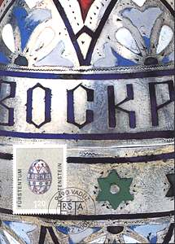
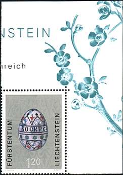
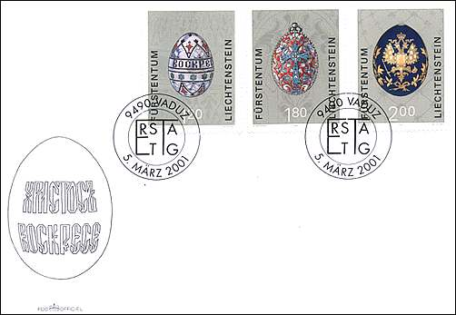
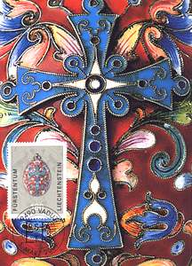
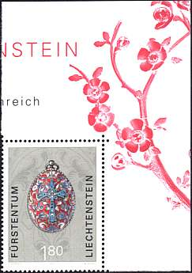
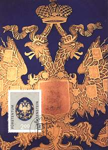
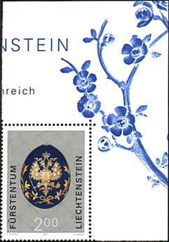

|
|
| Easter Eggs |
| From The Old Russia |
Easter is not only embodied in popular belief in Russia as the most important religious holiday. It also had its own tradition at the Czar's court which was nurtured carefully for centuries and, alongside the rituals and ceremonies, was also reflected in the artistic development of Easter Eggs.
 |
 |
In the 17th century, after the solemn service, the Czar exchanged the Easter kiss with the senior clergy. He then invited boyars and Moscow nobility and gave them eggs as presents. The ruler gave goose eggs, hens' eggs and eggs turned from wood, three, two, or - depending upon the person's rank - one.

These eggs were painted in garish colors on a gold background. They were produced by woodturners, icon painters and engravers from the armory as well as monks. 37,000 eggs were needed between Easter and Ascension to allow sufficient colored eggs for everyone. Enormous quantities of painted eggs were presented to the Tsar himself in wooden bowls lined with velvet and decorated with golden ornaments.
 |
 |
In the 18th and 19th century, state owned and private glassworks manufactured eggs from milk- or crystal-glass which was then cut, gilded and decorated with picturesque ornaments, monograms and also delicate miniature. In 1744 the Imperial Workshop in St. Petersburg began producing porcelain eggs. Later we also find silver and enameled eggs. Historical and mythological subjects were portrayed on them in addition to Christian customs and saints.
 |
 |
The Postage Stamp Design Office in Vaduz (Liechtenstein) has selected three of the finest eggs from the renown A.P. Goop's collection for a special issue series, as follows:
-
A silver Easter egg from the period 1896 - 1903 for the 1.20 CHF value
-
An Easter egg in cloisonné enamel (1896 - 1908) for the 1.80 CHF
-
A porcelain Easter egg (around 1890) for the 2 CHF.
The stamps were issued on 5th of March 2001. The designs are the work of Silvia Ruppen (Vaduz), the steel engraving is by Wolfgang Seidel (St. Martin am Wöllmissberg), the renown Austrian engraver. The stamps were printed by the Austrian Printing office in Vienna (Austria). Source: Briefmarken aus dem Fürstentum Liechtenstein, 5th of March 2001.
The value of CHF 2.00 was awarded the second rang at the Grand Prix WIPA 2001 in Vienna that rewards the nicest stamps worldwide.
Interested in some of the nicest and priciest Easter Eggs, offered by Czars to their Imperial spouses? Then please visit the Russian Easter Eggs page (see the link below).
Links:
| Created
3/02/2000. Revised:
06/29/03. Copyright © 2001 - 2003 by Victor Manta, Switzerland. All rights reserved in all countries. |
|